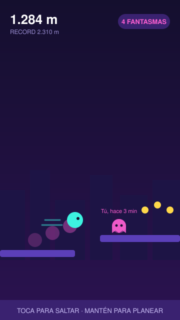
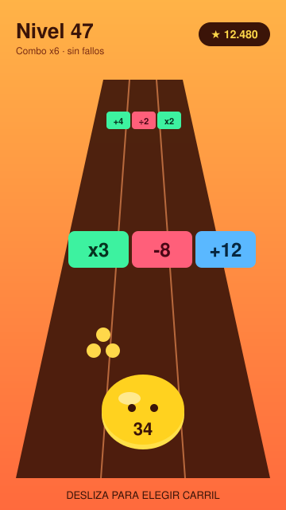
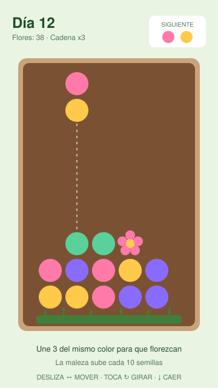
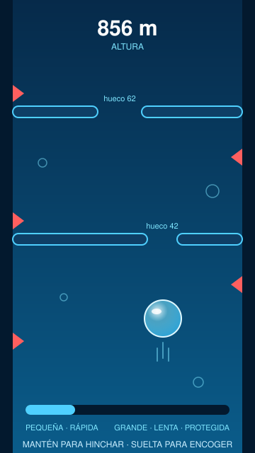
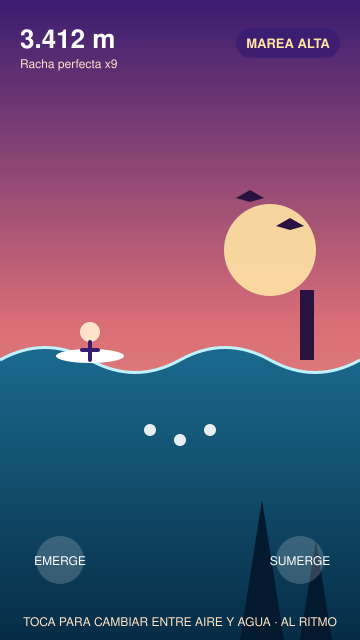

Ideas de videojuego endless
Cinco mockups en formato móvil. Los detalles de cada juego están en el README.





Cinco mockups en formato móvil. Los detalles de cada juego están en el README.




